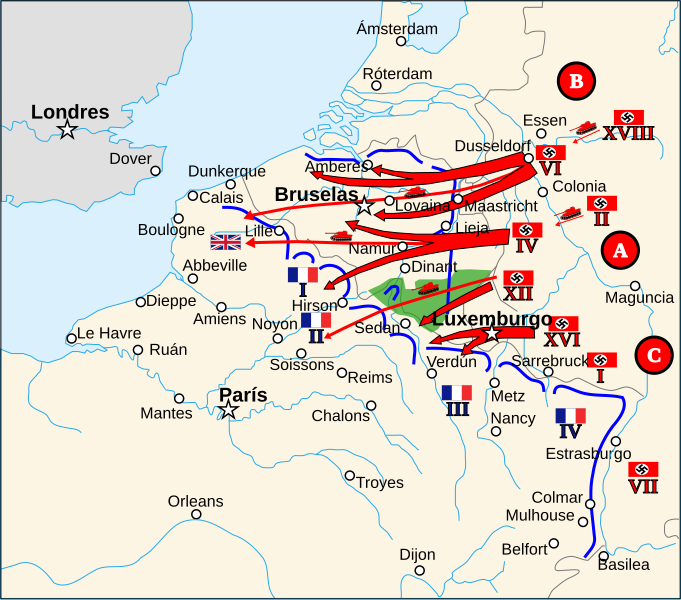

Batalla de Francia
También llamada la Campaña de Francia o la Caída de Francia. Comprende el Caso Amarillo (Fall Gelb) y el Caso Rojo (Fall Rot), y culminó con la rendición francesa en apenas seis semanas.
Datos
| Fechas | 10 de mayo – 25 de junio de 1940 (6 semanas) |
|---|---|
| Lugar | Francia, Bélgica, Países Bajos y Luxemburgo |
| Resultado | Victoria alemana decisiva; armisticio del 22 de junio de 1940 |
| Bando invasor | Alemania — e Italia desde el 10 de junio |
| Defensores | Francia, Reino Unido (Fuerza Expedicionaria Británica), Bélgica, Países Bajos y Luxemburgo |
| Comandantes del Eje | Gerd von Rundstedt, Fedor von Bock, Heinz Guderian, Erwin Rommel |
| Comandantes aliados | Maurice Gamelin y luego Maxime Weygand (Francia); Lord Gort (Reino Unido); rey Leopoldo III (Bélgica) |
| Consecuencia directa | Ocupación del norte y oeste de Francia; creación del régimen colaboracionista de Vichy en el sur |
Bando invasor
Ofensiva principal (10 may)
Entra el 10 de junio
Defensores
Fuerza Expedicionaria
Introducción
Tras la conquista de Polonia y el largo periodo de inacción conocido como la "guerra de broma" (Phoney War), Alemania lanzó el 10 de mayo de 1940 una ofensiva masiva en el oeste. En seis semanas derrotó a Francia —considerada entonces una de las mayores potencias militares del mundo— y expulsó del continente a la Fuerza Expedicionaria Británica.
La clave no fue la superioridad numérica, sino un plan audaz: concentrar las divisiones blindadas para atravesar el bosque de las Ardenas, un terreno que los aliados creían impenetrable, y rodear a los mejores ejércitos aliados que se habían adelantado hacia Bélgica.
Razones
- Eliminar el frente occidental: Hitler quería derrotar a Francia y Reino Unido antes de volverse hacia el este, evitando una guerra en dos frentes.
- Revancha histórica: el régimen nazi buscaba revertir la derrota alemana de la Primera Guerra Mundial y el Tratado de Versalles.
- El plan Manstein: frente al plan inicial (una repetición del avance por Bélgica de 1914), el general Erich von Manstein propuso el "corte de hoz" (Sichelschnitt): atacar por las Ardenas para dividir a los aliados. Fue la apuesta estratégica decisiva.
- Rodear la Línea Maginot: Francia había fortificado su frontera con Alemania con la poderosa Línea Maginot, pero esta no cubría la frontera con Bélgica y las Ardenas. Alemania simplemente la evitó por el norte.
Cuerpo (desarrollo)
El 10 de mayo comenzó el Caso Amarillo (Fall Gelb). Como maniobra de distracción, el Grupo de Ejércitos B invadió los Países Bajos y Bélgica, atrayendo hacia el norte a lo mejor de los ejércitos francés y británico, que acudieron a defender a sus aliados según lo previsto.
Mientras tanto, el grueso de los blindados alemanes (Grupo de Ejércitos A) avanzó en secreto a través de las Ardenas. El 13 de mayo, las divisiones Panzer de Guderian cruzaron el río Mosa en Sedan, rompiendo el frente francés en su punto más débil. A partir de ahí, los blindados corrieron hacia el oeste, hacia el Canal de la Mancha, en el llamado "corte de hoz".
Este avance dejó embolsados en el norte a los ejércitos aliados. Acorralados contra la costa, cientos de miles de soldados británicos y franceses fueron evacuados desde Dunkerque entre el 26 de mayo y el 4 de junio (Operación Dinamo), salvando a unos 338.000 hombres pese a perder todo su equipo pesado.
El 5 de junio comenzó el Caso Rojo (Fall Rot): la ofensiva final hacia el sur sobre el resto de Francia. El 10 de junio, Italia declaró la guerra y atacó por los Alpes. París cayó el 14 de junio sin combatir (declarada "ciudad abierta"). El 22 de junio, Francia firmó un armisticio con Alemania —en el mismo vagón de tren de Compiègne donde Alemania se había rendido en 1918—, que entró en vigor el 25 de junio.

Mapa estratégico en español (Wikimedia Commons). Muestra el "corte de hoz" a través de las Ardenas hacia Sedan y Dunkerque, y la Línea Maginot en la frontera oriental, que fue rodeada por el norte.
Conclusión
La derrota de Francia en solo seis semanas conmocionó al mundo. El país fue dividido: una zona ocupada por Alemania en el norte y el oeste, y una zona "libre" en el sur gobernada desde Vichy por el mariscal Pétain, que colaboró con los alemanes (ver Alianzas).
- Victoria alemana más rápida y espectacular de la guerra.
- Reino Unido quedó solo frente a Alemania, dando paso a la Batalla de Inglaterra.
- El general Charles de Gaulle, exiliado en Londres, lanzó el 18 de junio su llamamiento a continuar la lucha: nace la Francia Libre.
- La evacuación de Dunkerque preservó un ejército británico que sería clave más adelante.
Curiosidades
- La Línea Maginot rodeada: Francia invirtió enormes recursos en una línea defensiva inexpugnable... que el enemigo esquivó sin atacarla de frente. Es el ejemplo más citado de error estratégico por rigidez.
- El "milagro de Dunkerque": una flotilla improvisada de barcos militares y cientos de embarcaciones civiles (los "pequeños barcos") cruzó el Canal para rescatar a los soldados atrapados.
- La "División Fantasma": la 7.ª División Panzer de Rommel avanzó tan rápido y de forma tan impredecible que hasta el alto mando alemán perdía a veces su rastro; de ahí su apodo.
- El vagón de Compiègne: Hitler exigió que el armisticio se firmara en el mismo vagón de tren donde Alemania había capitulado en 1918, como venganza simbólica. Después lo hizo trasladar a Berlín.
Teorías
Debates e interpretaciones historiográficas, presentados como tales:
- ¿Por qué cayó Francia tan rápido? Se debate el peso de cada factor: la sorpresa estratégica del ataque por las Ardenas, una doctrina militar francesa demasiado defensiva y lenta, problemas de mando y comunicaciones, o una supuesta crisis de moral. La mayoría de historiadores subraya los fallos de doctrina y mando más que la falta de medios, pues Francia tenía tantos tanques como Alemania.
- La "orden de detención" en Dunkerque: el 24 de mayo, los blindados alemanes recibieron la orden de detenerse ante Dunkerque durante varios días. Se discute si fue una decisión militar (proteger los tanques para la fase siguiente, terreno pantanoso) o política, y hasta qué punto permitió la evacuación aliada.
- ¿Fue la Línea Maginot un error? Algunos historiadores matizan que la línea cumplió su función —proteger la frontera alemana y obligar a rodearla—; el error fue no extenderla ni preparar una defensa móvil en el flanco belga.